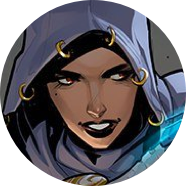
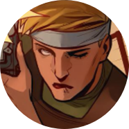
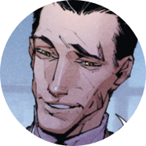
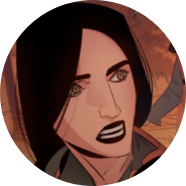
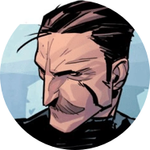

Джина Стивенс
Член Братства Воров, в котором обучалась и воспитывалась Ника, пока не сбежала, инсценировав собственную смерть. Узнав, что Чайкина жива, Джина не выдала подругу и продолжала следить за ее делами, втайне защищая от мести Братства.

Джошуа Донато
Был наемником, прошедшим много горячих точек, но сохранившим при этом честь, совесть и харизму. Мастер ближнего боя с использованием холодного оружия, но с винтовкой обращается не менее умело. Под влиянием пера Кутха превратился в подобие инопланетной плесени с памятью и сознанием Джоша.

Лотта Лемке
Тяжёлая артиллерия группы. Когда-то спасла Садап. К сожалению, под влиянием бога-ворона периодически переходит в режим берсерка, рискуя навредить и своим, и чужим, но рядом с Садап временно успокаивается.

Август ван дер Хольт
Миллиардер и владелец крупнейшей оружейной компании, обладающей едва ли не мировой монополией на самые современные технологии. Эгоистичен и властолюбив. Ищет людей, мутировавших в результате воздействия Кутха, чтобы использовать их потенциал.

Джонни Симонс
Хакер, с самого начала помогавший Нике и поддержавший ее решение вступить в МАК. Неожиданно для всех, Джонни оказался племянником погибшего агента Гамма, курировавшего операции Красной Фурии. В настоящее время помогает команде, не скрываясь по ту сторону гаджетов.

Джесси Родригез
Безбашенная наемница, получающая искреннее наслаждение от вида крови, перестрелок и жестокости. Нимфоманка. После того как Джесси избила сестру Хольта, чтобы подставить Нику, вынуждена скрываться от прежнего работодателя и примкнуть к старым врагам.

Садап Рахмани
Садап присоединилась к агентству после того, как была спасена Лоттой во время одной из операций. Она является единственным человеком, способным утихомирить Лотту во время припадков, а потому незаменима для союзников.

Артур Хаксли
Первоклассный снайпер и настоящий джентльмен. Он остаётся вежлив и собран даже в самых сложных ситуациях. Верен своему долгу и способен убить взбесившегося сокомандника, чтобы спасти остальных. Некоторое время притворялся поехавшим, со стороны оценивая варианты развития событий.

Ника Чайкина
Она же Красная Фурия. Профессиональная воровка с чистым сердцем, волей судьбы ставшая сотрудницей МАК. Новообретенная команда стала для Ники семьёй, которой у девушки никогда не было, и она готова сражаться на их стороне, даже лишившись ног в схватке с Августом ван дер Хольтом.